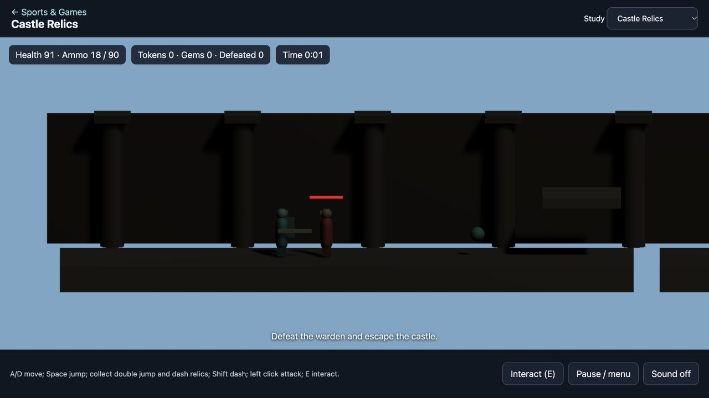

Architectural scene composition
Spatial layout organizes the experience. The placement of structures, routes, and focal points determines how a scene is understood and how movement through it is directed.
Unity
An environment featuring castle architecture, terrain, materials, and atmospheric lighting.
Spatial layout organizes the experience. The placement of structures, routes, and focal points determines how a scene is understood and how movement through it is directed.
Surface properties control how an object responds to light. Color, texture, roughness, and reflective response make the same geometry read as different materials.
Lighting establishes depth, contrast, and atmosphere. The relationship between illumination and scene geometry helps the viewer read forms, distances, and focal points.
